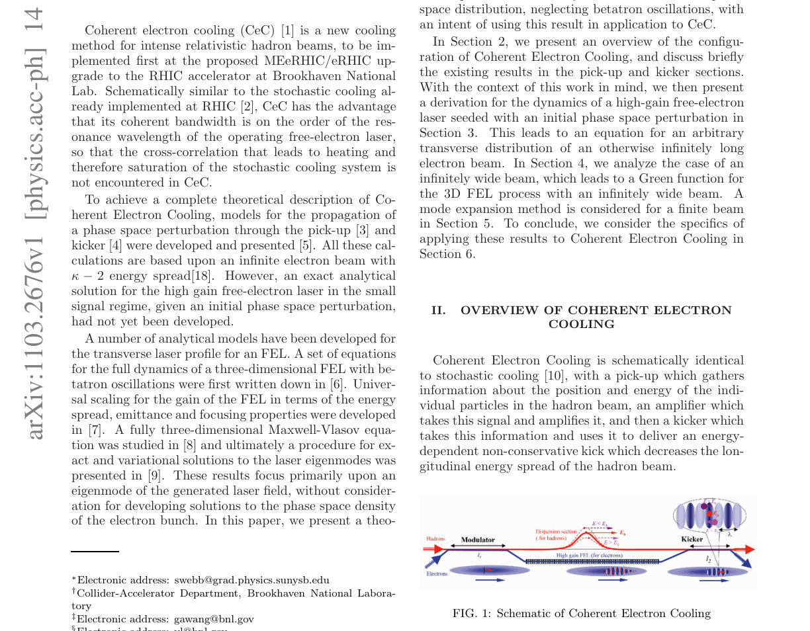

Research Paper Analysis
1. A Three-Dimensional Model of Small Signal Free-Electron Lasers
Authors: Stephen Webb, Gang Wang, Vladimir Litvinenko
Categories: physics.acc-ph
Published: March 14, 2011
Relevance: 8.0/10
Confidence: 0.90
Suggested Project: None
Summary
The paper develops an analytic, three‑dimensional model of the high‑gain free‑electron laser (FEL) in the small‑signal regime, deriving Maxwell–Vlasov equations that include transverse effects and space‑charge detuning. It provides Green‑function solutions for both infinite and finite transverse beam sizes, enabling calculation of the phase‑space evolution of an electron bunch seeded by a Debye‑screened perturbation. The results are intended for benchmarking coherent electron cooling (CeC) systems, where the FEL acts as the amplifier that generates an energy‑dependent kick on a hadron beam.
Key Contributions
- Derivation of a 3‑D Maxwell–Vlasov framework for small‑signal high‑gain FELs including transverse detuning and space‑charge effects.
- Analytic Green‑function solutions for infinite and finite transverse beam geometries.
- Explicit treatment of the initial phase‑space perturbation from Debye screening, linking FEL amplification to coherent electron cooling.
- Identification of dominant eigenmodes in the finite‑beam case and discussion of optical guiding.
- Provision of benchmarkable expressions for FEL phase‑space evolution to support CeC design and simulation.
Important Figure

FIG. 1: Schematic of Coherent Electron Cooling (page 1).
Why It Matters
The paper provides a detailed theoretical description of the FEL amplifier that is central to coherent electron cooling, a key component of the Amplified Stochastic Oscillator project. It offers analytic tools directly applicable to modeling the pickup‑to‑kicker signal transport and cooling decrements, making it highly relevant to the user’s research focus on optical stochastic cooling and beam dynamics in storage rings.
Links
- Abstract: https://arxiv.org/abs/1103.2676v1
- PDF: https://arxiv.org/pdf/1103.2676v1
- Extracted full text: /Users/thomas/Desktop/Agents/research-newsletter-agent/data/markdown/1103.2676v1.md
2. Inverse-designed 3D laser nanoprinted phase masks to extend the depth of field of imaging systems
Authors: T. J. Sturges, M. Nyman, S. Kalt, K. Pälsi, P. Hilden, M. Wegener, C. Rockstuhl, A. Shevchenko
Categories: physics.optics
Published: July 11, 2024
Relevance: 2.0/10
Confidence: 0.90
Suggested Project: None
Summary
The paper presents an inverse‑designed, radially symmetric phase mask fabricated by two‑photon 3D laser nanoprinting to extend the depth of field of a standard incoherent microscope by a factor of ~4 while preserving resolution. The design uses a hybrid global‑then‑local optimization: Bayesian global search with a low‑order Chebyshev polynomial, followed by gradient‑based refinement with higher‑order polynomials and a radial grid. The mask is implemented as a height profile on a glass substrate, fabricated with sub‑wavelength accuracy and a pre‑compensation routine to correct systematic printing errors. Optical measurements of the point spread function and imaging of test objects confirm the simulated performance, showing increased depth of field, modest side‑lobe increase, and reduced peak intensity.
Key Contributions
- Hybrid inverse‑design workflow combining Bayesian global search and gradient‑based refinement for phase mask optimization
- Fabrication of a free‑form phase mask via two‑photon 3D laser nanoprinting with sub‑wavelength accuracy
- Pre‑compensation strategy to mitigate stitching and systematic fabrication errors
- Experimental validation of extended depth of field in a standard microscope with minimal resolution loss
Important Figure
![Figure 2: The optimised phase mask design and simulations showing an increased depth of field. (a) The optimised height profile of the phase mask as a function of the radial coordinate. For r > 1 mm the height is constant. (b) Simulated point spread function (PSF) on the object side of the imaging setup, exhibiting an extended depth of field; z is the distance from the focal plane along the optical axis. The inset shows the PSF of the imaging system without the phase mask (the image is shifted vertically for clarity, but the size scale is not changed). (c) Cuts of the PSF along the optical axis for the imaging system without (black) and with (blue) the phase mask. (d-e) Cuts of the PSF along the radial axis for (d) the optimised design, and (e) the microscope only. These figures show that the phase mask increases the depth of field at the cost of reduced peak intensity, more pronounced side lobes, and increased axial inhomogeneities.](../assets/2407.08482v2/important_figure.png)
Figure 2: The optimised phase mask design and simulations showing an increased depth of field. (a) The optimised height profile of the phase mask as a function of the radial coordinate. For r > 1 mm the height is constant. (b) Simulated point spread function (PSF) on the object side of the imaging setup, exhibiting an extended depth of field; z is the distance from the focal plane along the optical axis. The inset shows the PSF of the imaging system without the phase mask (the image is shifted vertically for clarity, but the size scale is not changed). (c) Cuts of the PSF along the optical axis for the imaging system without (black) and with (blue) the phase mask. (d-e) Cuts of the PSF along the radial axis for (d) the optimised design, and (e) the microscope only. These figures show that the phase mask increases the depth of field at the cost of reduced peak intensity, more pronounced side lobes, and increased axial inhomogeneities. (page 7).
Why It Matters
The paper focuses on optical imaging depth‑of‑field enhancement using a phase mask, which is unrelated to accelerator physics, beam dynamics, or machine‑learning projects described in the user’s research profile. Therefore, its relevance to the stated projects is minimal.
Links
- Abstract: https://arxiv.org/abs/2407.08482v2
- PDF: https://arxiv.org/pdf/2407.08482v2
- Extracted full text: /Users/thomas/Desktop/Agents/research-newsletter-agent/data/markdown/2407.08482v2.md
3. Simultaneous Dual-Plane Multi-Write-Spot Two-Photon Polymerization Using a Single Diffractive Optical Element
Authors: Thomas Le Deun, Joël Rovera, Kevin Heggarty
Categories: physics.optics
Published: April 17, 2026
Relevance: 1.5/10
Confidence: 0.90
Suggested Project: None
Summary
The paper presents a dual‑plane, multi‑spot two‑photon polymerization (2PP) technique that uses a single static diffractive optical element (DOE) to generate two independent focal‑spot arrays in distinct planes. By simultaneously writing two layers during continuous scanning, the method achieves a 1 mm² fabrication speed of 90 s for four‑layer woodpile structures, demonstrating a significant throughput improvement over conventional serial 2PP.
Key Contributions
- Design of a single DOE capable of producing two independent focal‑spot arrays in separate planes.
- Implementation of simultaneous dual‑plane 2PP enabling continuous scanning of two layers.
- Demonstration of a 1 mm²/90 s writing speed for four‑layer woodpile structures using 29 write spots.
- Proof that combining multi‑spot parallelization with simultaneous multi‑plane writing can substantially increase 2PP throughput.
Why It Matters
The paper focuses on optical fabrication techniques for micro‑structures, which are unrelated to accelerator physics, beam dynamics, or machine learning projects. It offers no content relevant to the user’s research goals.
Links
- Abstract: https://arxiv.org/abs/2604.16569v1
- PDF: https://arxiv.org/pdf/2604.16569v1
4. Vector Apodizing Phase Plates for the ELT: From prototype to final optics for METIS and MICADO
Authors: J. A. van den Born, R. Landman, D. S. Doelman, F. Snik, Y. Nishie, Y. Watanabe, M. Shoda, F. C. M. Bettonvil, E. Aranzana, J. H. H. Rietjens, T. P. G. Wijnen, P. Baudoz, O. Absil, G. Orban de Xivry, D. Dolkens
Categories: astro-ph.IM
Published: July 3, 2026
Relevance: 0.0/10
Confidence: 0.95
Suggested Project: None
Summary
The paper presents the design, fabrication, and performance assessment of Vector Apodizing Phase Plates (vAPPs) for the METIS and MICADO instruments on the Extremely Large Telescope. It compares the two vAPP designs, discusses manufacturing challenges such as coating inclusions, layer uniformity, and substrate adhesion, and evaluates their impact on optical performance through simulations and empirical data, concluding that imperfections have limited effect on contrast curves.
Key Contributions
- Comparison of METIS and MICADO vAPP designs for different wavelength bands
- Identification and analysis of manufacturing challenges (coating inclusions, layer uniformity, substrate adhesion)
- Simulation and empirical assessment showing limited impact of imperfections on final optical performance
- Provision of expected contrast curves and implications for on-sky observations
Why It Matters
The paper focuses on high-contrast imaging coronagraphs for astronomical telescopes, which is unrelated to accelerator physics, beam dynamics, or machine learning projects described in the user’s research context.
Links
- Abstract: https://arxiv.org/abs/2607.03119v1
- PDF: https://arxiv.org/pdf/2607.03119v1
5. When Every Simulation Counts: Value-Based Reinforcement Learning for Accelerated Photonics Inverse Design
Authors: Longying Wen, Feiyang Wu, Jinglin Yu, Chongxian Yuan, Renjie Li, Zhaoyu Zhang
Categories: physics.optics, cs.AI, cs.LG, physics.app-ph
Published: July 26, 2026
Relevance: 2.0/10
Confidence: 0.90
Suggested Project: None
Summary
The paper evaluates deep Q‑network (DQN) variants for inverse design of photonic‑crystal surface‑emitting lasers (PCSELs) under a strict simulation budget, identifying dueling DQN as the most reliable for improving quality factor, wavelength accuracy, and upward power.
Key Contributions
- Comparison of baseline DQN with six value‑based variants on a seven‑variable PCSEL design within an 83‑call simulation budget.
- Demonstration that dueling DQN consistently outperforms other variants across four random seeds, improving mean Q‑factor, reducing wavelength error by 64%, and increasing upward power by 47%.
- Analysis of sample efficiency, policy behavior, and physical response to disentangle learning gains from favorable initialization.
- Provision of a reproducible framework and publicly available code for algorithmic attribution in scientific optimization.
Why It Matters
The study focuses on reinforcement learning for photonic device design, which is unrelated to accelerator physics, beam dynamics, or photoinjector optimization. It does not address any of the goals or methods of the listed projects.
Links
- Abstract: https://arxiv.org/abs/2607.23469v1
- PDF: https://arxiv.org/pdf/2607.23469v1
6. Detection of Orbital Angular Momentum Modes via Spiral Phase Plate
Authors: Amin Hakimi, S. Faezeh Mousavi, Amir Nader Askarpour
Categories: physics.optics
Published: February 25, 2025
Relevance: 1.0/10
Confidence: 0.90
Suggested Project: None
Summary
The paper investigates the use of spiral phase plates (SPPs) as efficient detectors for orbital angular momentum (OAM) modes in mode division multiplexing (MDM) systems. It analytically and numerically evaluates key performance metrics—efficiency, crosstalk, and signal‑to‑interference ratio—showing that an inverse‑SPP, together with optimized propagation length and aperture size, can achieve precise OAM detection.
Key Contributions
- Analytical and numerical assessment of SPPs for OAM detection in MDM systems
- Identification of efficiency, crosstalk, and signal‑to‑interference ratio as critical performance metrics
- Demonstration that an inverse‑SPP with optimized propagation length and aperture size enables effective and precise OAM detection
Why It Matters
The paper focuses on optical communication techniques for detecting orbital angular momentum modes using spiral phase plates, which is unrelated to accelerator physics topics such as beam dynamics, stochastic cooling, or photoinjector optimization. Therefore, its relevance to the listed research projects is minimal.
Links
- Abstract: https://arxiv.org/abs/2502.18588v1
- PDF: https://arxiv.org/pdf/2502.18588v1